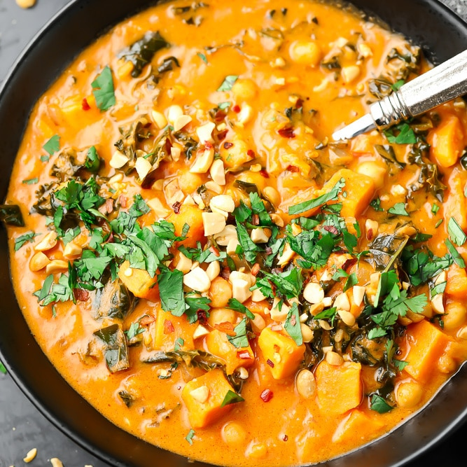

Peanut Soup

Description
Peanut soup is a soup made from peanuts, often with various other ingredients. It is a staple of African cuisine but is also eaten in East Asia (Taiwan), the United States (mainly in Virginia)
- 4 tablespoons margarine
- 3 tablespoons minced onion
- 1 clove garlic, minced
- 1 tablespoon all-purpose flour
- 1 cup heavy whipping cream
- 1 cup peanut butter
- ½ cup ground peanuts
- 4 cups chicken broth
- salt and pepper to taste
Steps
- In a heavy soup pot melt the butter. Add the onion, garlic, flour and peanut butter. Stir until very smooth. Beat in the stock and season well with salt and pepper. Simmer over low heat until thick, about 20 minutes. Stir in the cream and heat through. Serve warm with ground peanuts.